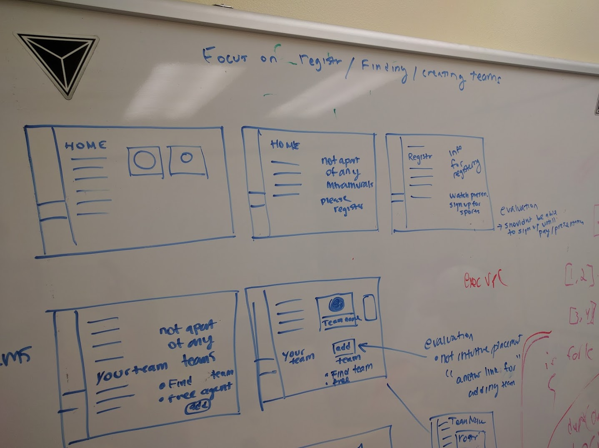
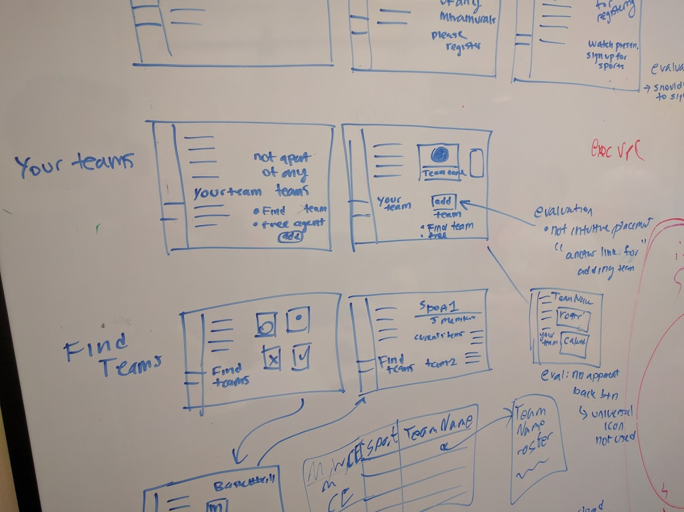

Prototype
 

| Name | Role |
|---|---|
| Monil Patel | Project Manager |
| Brandon Bradley | Design Lead |
| Jason Barret | Research Lead |
| Toby Pancione | Reporting Lead |
| Tommy Hyres | Prototyping Lead |
| Aaron Newman | Evaluation Lead |
Process:
We utilized contextual inquiry in order to learn more about the current process that students face when signing up and managing teams for intramurals. Interviewed a student who has a lot of experience with intramurals, and was able to watch as they walked through the signup process and discussed how they manage the teams. Was also able to get some artifacts from the interview, including sample pictures of the website and team roster that team captains are sent.
Also watched the IM sports general presentation video to gain more information about registering for a sport.
Interview
How many intramurals have you been on at your time at Virginia Tech?I’ve been on about four different intramurals.
How many intramurals have you participated on at once?Just one, never been on two at the same time
Do you usually sign up individually or as a group?Each person signs up to be eligible to play
Where do you go to sign up?Tech has an intramural website page
Describe the process of signing up for intramurals and joining a team?Each person must sign up individually and pay the 20 dollar fee.
Once they pay they can play as many sports as you want for one year.
Each person must watch an intramural sports presentation which takes about 30 min.
After the presentation you then go and try to find people to make a team, and someone decides to be captain.
The captain will submit the team name. The captain then watches an additional presentation about the specific sport rules and is tasked with sharing that information with the rest of the team
Does that document include the members?No it just states the name of the team
Could you elaborate on that presentation?It’s a set of slides with a voiceover that tells you the rules of the leagues, its a pretty tedious and boring process. And you have to watch it each time you sign up, so for me it was once every semester.
Is there a site which can help you find people to make the team?Not that I know of, it is usually through word of mouth, asking friends. I think there is a individual sign up but i have never done it.
Can any number of teams sign up for a sport?No there is a cap on the number of teams for a specific sport. If that sport fills up then your team will be put on a waitlist.
How do you keep track of the members on your team?So after the captain submits the name, all team members need to come to one of the first two games. Whoever is present for either game will be put on the team. A roster is sent to the captain to confirm its accuracy.
How do you keep track of who can attend which day?We usually just have a group chat to see how many people can attend, i think some other teams might use google calender to keep track but we usually just chat each other. We also have to take a conflict survey which has us select what times M-F we are unable to play.
Where do you go to see when and where to play?We are sent a link after registration to see online who we play and when and where
Findings from Interview:
After observing the user interact and speak about his experience with intramurals we can see that there is a significant disconnect between the individual teams and members. A lot of responsibility and information goes through the team captain but not directly accesible to each member. It seems as though students dont really advertise or try to find other students outside of their friends group. Keeping track of who can play and when they play appears to be very loose with no consistent way of seeing everyones schedule easily. The process also appears to be repetitive, especially for those who have participated in intramurals in the past.
Findings as an athlete:
We held a design brainstorming session where each member showed their rapid prototype to the group. We discusses possible pros and cons of each design and tried to combine the best features from each. We utilized an iterative process, continuously evaluating our design and creating rapid prototypes.
As our goal was to get more students involved in intramurals, we wanted to remove any barriers that are currently impeding students from joining. A major one of these barriers is the intramural website, which, beside being yet another website students need to become familiar with, is reportedly difficult to navigate. Our design seeks to incorporate intramurals into a site students already know, Canvas.
We wanted it to be easier for students to create and register a new team. Additionally, we wanted to help students who are not already a part of a team to find and join one. Both of these would be achieved by creating an additional tab on Canvas dedicated to intramural sports. This tab would parallel the ones already used for classes: instead of a list of links for grades, files, syllabi, and the like, our page would have links to register yourself or a team, manage the teams you are a part of, finding open teams to join, and view a team calendar.
In order for us to evaluate our design we took our initial canvas design and criticized each aspect the page would show. By evaluating we started on the first most page and worked our way into each sub-page, thinking of ways we could better our design and make it more user friendly. When we go to the register page we had three key items: info for registering, a link to watch the presentation, and a link to sign up for sports. We were thinking about how to keep players eligible and when going over our initial design we decided to change how the signup link works. The link should be unable to be clicked on until the presentation has been watched, the quiz was passed, and the registration fee is paid.
Moving further into the site we moved the location of the add teams button. We originally had it on the page titled “Your Teams”, but came to the conclusion that “add team” being in your teams page might not be intuitive for someone trying to add a team. So to fix this we would explain the location of some specific things in the “info for registering” page. One overall design change we came to was to add a back button. The initial design we figured the user could just click on the page he wants to access to move around. This we figured one, would not be intuitive for all users and two, may not be what the user wants to do. To fix this we decided to implement a back button.
The final design change we wanted to make during the evaluation is on the page “Find Team”. The initial design was going to have all the teams listed out, but we then realized that may become an information overload. Some sports have more than 100 teams, displaying all of the teams as an option may be overwhelming and not allow the user to locate what they want. To fix this we will first present a grid of tiles to showcase all available sports. After the user selects a sport it will show additional filters such as gender preferences or sport type, e.g. 3-on-3 versus 5-on-5 basketball. From here a user can choose the desired category and view all teams that are currently registered for that section. Team information would include a list of the members currently on that team, number of available spots, and if they are looking for individuals to sign up.
Another critique we came across was in response to the calendar that we had designed. Initially we had a calendar within the “your teams” section of the page. However we discussed the possibility that a user may be on multiple teams and would wish to view the schedule for all of their teams. We would also want to be able to integrate with the overall calendar that canvas already provides so that students could see their coursework and intramural meetings times in one location.